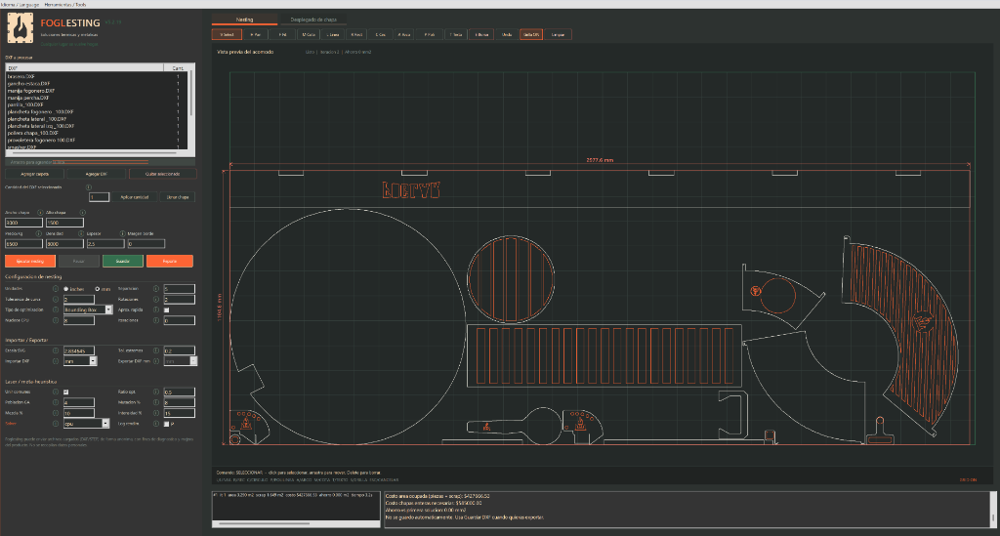

Foglesting
Software de nesting para chapa metálica
Motor C++ con optimización genética iterativa. Cargá tus DXF, configurá tu chapa y obtené el acomodo óptimo con mínimo desperdicio de material.
Software de nesting para chapa metálica
Motor C++ con optimización genética iterativa. Cargá tus DXF, configurá tu chapa y obtené el acomodo óptimo con mínimo desperdicio de material.

No es una pasada única. Es evolución.
Foglesting no se conforma con la primera solución. Corre un algoritmo metaheurístico iterativo inspirado en la evolución biológica: genera poblaciones de soluciones, las muta, cruza, selecciona las mejores y repite — iteración tras iteración — hasta encontrar el acomodo óptimo.
Cada generación compite por supervivencia. Solo las mejores configuraciones sobreviven. El resultado: máximo aprovechamiento, mínimo desperdicio.
Todo lo que necesitás para optimizar el corte de chapa, sin depender de software caro ni licencias
Compilado directamente a código máquina. Procesa cientos de piezas complejas en segundos, no minutos.
Soporta LINE, ARC, CIRCLE y LWPOLYLINE. Reconstruye contornos cerrados y detecta agujeros internos automáticamente.
Separación entre piezas, tolerancia de curvas, rotaciones permitidas, cantidad por DXF, iteraciones y población genética.
El algoritmo corre múltiples generaciones. Cada iteración muta, cruza y selecciona. La solución mejora con cada ciclo evolutivo.
Vista previa del acomodo, porcentaje de utilización, chapas usadas y gráfico de mejora por iteración en la interfaz nativa Win32.
Generá el layout optimizado como DXF listo para corte láser, CNC o plasma. Sin conversiones, directo a producción.
De tus archivos DXF a un corte optimizado genéticamente
Seleccioná una carpeta o archivos DXF individuales. Asigná cantidades por pieza.
El motor genético genera poblaciones, muta, cruza y selecciona las mejores soluciones automáticamente.
Descargá el layout optimizado listo para mandarlo a corte láser, CNC o plasma.
Optimización genética para tu corte de chapa. Sin licencias, sin límites, sin instalador.
Descargar Foglesting